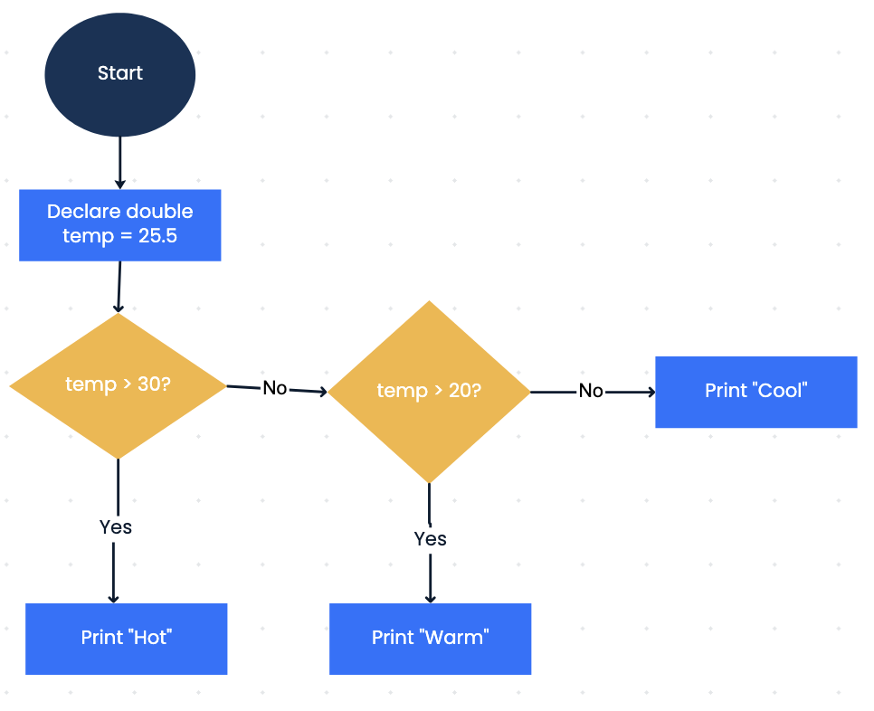
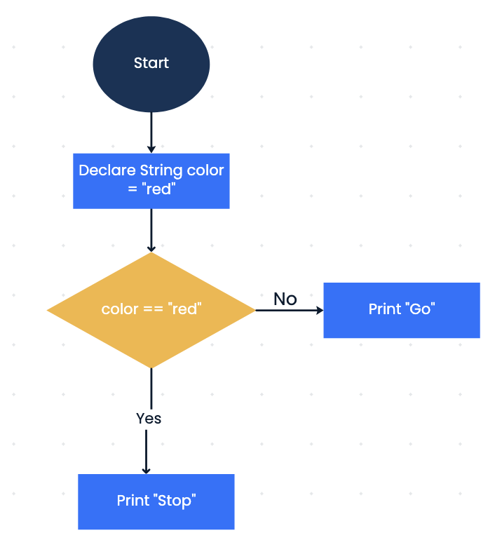
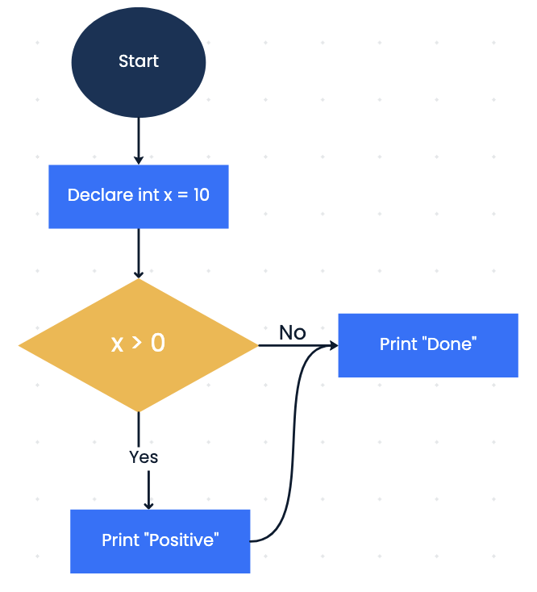
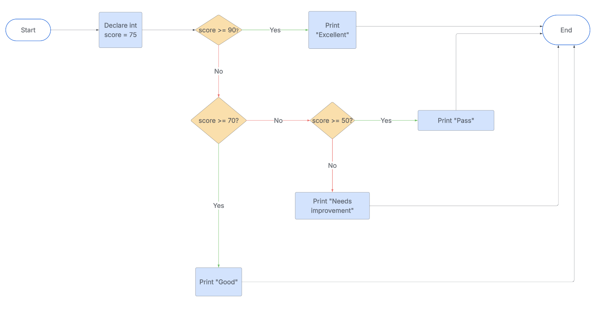

Chapter 1: Conditional Code Blocks
Section 1: What Is a Conditional Block?
A conditional block lets your program decide whether to run certain code based on whether a condition is true or false. Think of it like a fork in the road — the program chooses one path depending on the situation.
You've already worked with two types of code blocks: 1. class block — the outermost block defining a class 2. main method block — where our program runs
A conditional block is a third type, nested inside the main method.
Section 2: Comparison Operators
To create conditions, we use comparison operators. These compare two values and return either true or false.
| Operator | Meaning | Example | Result |
|---|---|---|---|
< |
less than | 2 < 6 |
true |
> |
greater than | 10 > 5 |
true |
== |
equal to | 10 == 5 |
false |
!= |
not equal to | 7 != 7 |
false |
<= |
less than or equal to | 3 <= 3 |
true |
>= |
greater than or equal to | 4 >= 5 |
false |
These operators don't return numbers — they return true or false.
Section 3: The boolean Type
boolean variables store either true or false. You can save the result of a comparison:
Using a boolean can make your code read like a sentence.
Section 4: The if Statement
Example:
int age = 17;
if (age >= 18) {
System.out.println("You are old enough to vote!");
}
System.out.println("Done.");
Output for age = 17:
17 >= 18 is false, so the message is skipped. "Done." prints regardless because it's outside the if block.
Section 5: The if / else Statement
else runs only if the if condition is false.
if (age >= 18) {
System.out.println("You are old enough to vote!");
} else {
System.out.println("Sorry, you are not old enough to vote.");
}
System.out.println("Done.");
Output for age = 17:
Only one of the if or else blocks runs — never both.
Section 6: The else if Statement
Use else if to check multiple conditions in sequence:
int number = 2;
if (number > 0) {
System.out.println("The number is positive!");
} else if (number == 0) {
System.out.println("The number is zero.");
} else {
System.out.println("The number is negative.");
}
Java stops at the first condition that is true and skips the rest. If none are true, the else block runs as a catch-all.
Section 7: Logical Operators
Sometimes a decision depends on more than one condition. Logical operators combine boolean expressions into a single true/false result.
| Operator | Meaning | Example | True when... |
|---|---|---|---|
&& |
AND | age >= 13 && age <= 19 |
both sides are true |
\|\| |
OR | day == "Sat" \|\| day == "Sun" |
at least one side is true |
! |
NOT | !isRaining |
flips true to false (or vice versa) |
int num = 50;
if (num >= 1 && num <= 33) {
System.out.println("Low range");
}
if (num == 50) {
System.out.println("Exactly fifty!");
}
Key points:
- && requires both conditions to be true — if either is false, the whole expression is false
- || requires at least one condition to be true — it's only false if both sides are false
- You can combine && with regular comparisons to check ranges, like num >= 1 && num <= 33
Section 8: Key Takeaways
- Conditional blocks let your program make decisions
- Conditions use comparison operators to evaluate to
trueorfalse booleanvariables storetrueorfalse- Only the block whose condition is
trueruns — the others are skipped else iflets you chain multiple conditions&&,||, and!combine conditions together
Homework
Attention
Unit 3 Chapter 1 Homework
Complete up to 100 points worth of the exercises below — choose any combination that adds up to no more than 100 points (extra credit beyond 100 is capped). For example: Exercises 1+2+3, or Exercises 1+4.
- Exercise 1: Match Flowcharts to Code (30 points)
- Exercise 2: Create a Flowchart from Code (30 points)
- Exercise 3: Write Code from a Flowchart (40 points)
- Exercise 4: Create Both Flowchart and Code (70 points)
Exercise 1: Match Flowcharts to Code (30 points)
Match each flowchart below to the correct code snippet (A, B, or C).



Code A:
Code B:
double temp = 25.5;
if (temp > 30) {
System.out.println("Hot");
} else if (temp > 20) {
System.out.println("Warm");
} else {
System.out.println("Cool");
}
Code C:
String color = "red";
if (color.equals("red")) {
System.out.println("Stop");
} else {
System.out.println("Go");
}
.equals(), not == — you'll learn more about this later. For now, just read it as "if color is red.")
Flowchart 1 goes with code snippet: _ Flowchart 2 goes with code snippet: _ Flowchart 3 goes with code snippet: ____
Exercise 2: Create a Flowchart from Code (30 points)
Given the following Java code, draw a corresponding flowchart. Label all shapes clearly and include the exact conditions and actions. Use diamonds for if conditions, rectangles for statements (variable declarations, print).
public class AgeChecker {
public static void main(String[] args) {
int age = 15;
if (age >= 18) {
System.out.println("Adult");
} else if (age >= 13) {
System.out.println("Teen");
} else {
System.out.println("Child");
}
}
}
Draw your flowchart on paper and upload a photo, or use drawing software of your choice.
Exercise 3: Write Code from a Flowchart (40 points)
Read the flowchart below, then write the corresponding Java program. Name the class ScoreGrader. Remember to include public static void main(String[] args) inside the class. Use appropriate variable types and make sure the code matches the logic exactly.

Exercise 4: Create Both Flowchart and Code (70 points)
Draw a detailed flowchart for the algorithm below (draw on paper and upload a photo, or use a graphics program), and write the corresponding Java program. Name the class DiscountCalculator.
Algorithm:
- Declare a
doublevariablepurchaseAmountand set it to150.0 - If
purchaseAmount >= 200, apply a 20% discount and print"Discounted price: [insert calculated value]" - Else if
purchaseAmount >= 100, apply a 10% discount and print"Discounted price: [insert calculated value]" - Else, print
"No discount. Price: [insert original value]" - Additionally, include an initial check: if
purchaseAmount <= 0, print"Invalid amount"and end without calculating - Add a final print statement that always runs, like
"Thank you for shopping!", and reflect it in your flowchart